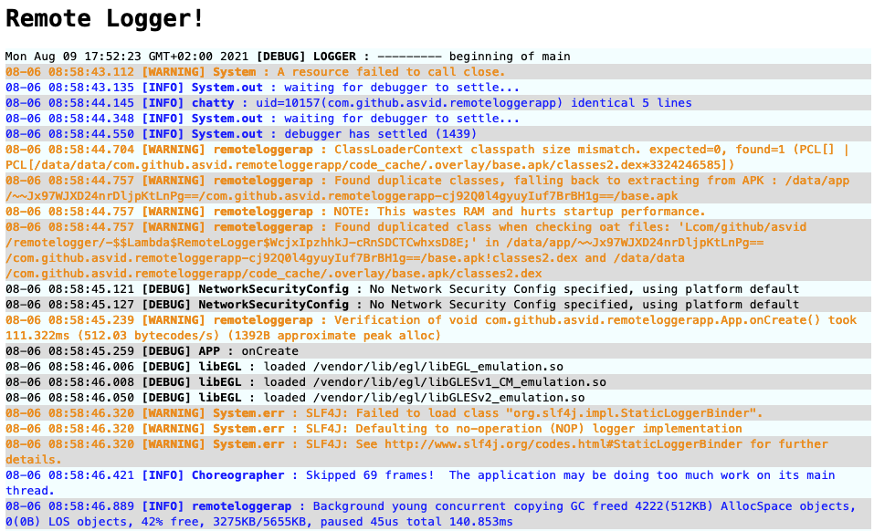

Respect the Logcat
The primary Android developer tool - Logcat. It is so widely used, always at hand, that it is difficult to imagine a situation where you have to work without it. However, I’ve found myself in such a situation. And I decided to write and share a tool that helped me survive this drama.
The challenge
I was given a task to test a certain library, and since I work in #fintech, there often are some additional security checks. This library failed to initialize if:
- the application was built in
debugmode - was installed by Android Studio, or
adb install - it was unsigned (this is due to installing the application in the
releaseversion) - the “developer options” were enabled
- was running on the device or OS version that was not approved
No developer options mean no logs. Just building the application in the release version limits the logs, but at least exceptions are logged. The application was crashing quite often, I suspected some standard NPE because, for example, I forgot to initialize or stub something, etc. but I had no idea where. I couldn’t just write tests or stub the library, because that was my taks - to check how it works in closest to “real” environment.
Crashlytics or some other remote crash reporting tool could help somewhat. However, reporting is not immediate, only application crashes and some metrics are reported, and I would also like to log regular events.
The solution
If only you could send Logcat logs, e.g. via WebSocket, and then catch them on your computer… I did not find such a tool, so I’ve created one.
Server
I needed something simple, which would allow me to set up a WebSocket server and display logs as HTML, or log in to a file. I chose ExpressJS which I had to deal with a bit as a hobby.
WebSocket
This is all it takes to get a WebSocket server:
const ws = require('ws');
const wsServer = new ws.Server({ noServer: true});
wsServer.on('connection', socket => {
events.clear();
console.log("clearing events");
socket.on('message', message =>{
events.add(JSON.parse(message))
})
});
const server = app.listen(process.env.WS_PORT || '1234')
console.log("Remote Logger is starting on port: ", process.env.WS_PORT || '1234');
server.on('upgrade', (request, socket, head) =>{
wsServer.handleUpgrade(request, socket, head, socket =>{
wsServer.emit('connection', socket, request);
});
});
The server listens for events on provided port in the startup parameter WS_PORT or default 1234, and then aggregates them in the events object.
Web UI
Having logs in JavaScript object I could display them as HTML. I used pug templates. All it takes to display logs is adding this in ExpressJS app:
app.set('view engine', 'pug')
app.get('/', function (req, res) {
res.render('index', { title: 'Remote Logger', message: 'Remote Logger!', data: events.toArray() })
})
And a Pug template:
html
head
title= title
style
include style.css
body
h1= message
ul
each event in data
li(class=event.level)!= event.time+' <b>['+event.level+'] '+event.tag+'</b> : ' + '<span style="white-space: pre-wrap">'+event.message+'</span>'
So as simple unordered list feeded with elements of the events object, with very basic CSS styles for log level colors.
This is how it looks: 
Extra
I just couldn’t let go of not adding something extra just for fun, so after starting the server, we are greeted by information about the port used, the server IP to be entered in the Android code, and the name of the tool. Additionally, the log page opens automatically in your browser.
❯ node index.js
Remote Logger is starting on port: 1234
Application started on port 3000 at IP: 192.168.1.87
██████╗ ███████╗███╗ ███╗ ██████╗ ████████╗███████╗
██╔══██╗██╔════╝████╗ ████║██╔═══██╗╚══██╔══╝██╔════╝
██████╔╝█████╗ ██╔████╔██║██║ ██║ ██║ █████╗
██╔══██╗██╔══╝ ██║╚██╔╝██║██║ ██║ ██║ ██╔══╝
██║ ██║███████╗██║ ╚═╝ ██║╚██████╔╝ ██║ ███████╗
╚═╝ ╚═╝╚══════╝╚═╝ ╚═╝ ╚═════╝ ╚═╝ ╚══════╝
██╗ ██████╗ ██████╗ ██████╗ ███████╗██████╗
██║ ██╔═══██╗██╔════╝ ██╔════╝ ██╔════╝██╔══██╗
██║ ██║ ██║██║ ███╗██║ ███╗█████╗ ██████╔╝
██║ ██║ ██║██║ ██║██║ ██║██╔══╝ ██╔══██╗
███████╗╚██████╔╝╚██████╔╝╚██████╔╝███████╗██║ ██║
╚══════╝ ╚═════╝ ╚═════╝ ╚═════╝ ╚══════╝╚═╝ ╚═╝
Android Lib
Initialization of the android part of the tool is trivial, it is best to do it in the onCreate() method of the class that inherits from Application:
class App : Application() {
override fun onCreate() {
super.onCreate()
RemoteLogger().initialize(
Config(
"192.168.1.87",
1234,
applicationContext.packageName
)
)
}
}
You just initialize the library and forget about the thing, the logs go to your local server. This tool will not replace remotely collecting application crashes or Logcat itself. It is only about solving a specific problem, where the application must run in an environment that does not allow the use of Logcat, but still, in the development phase, when you need access to logs. Logger initialization and the library itself should not be included in the publicly released version of the application.
Usage
- Download the repo
- Add the library to the project JitPack
- Fire up the server in the /server directory
node index.js - Launch your application with the added library
- Refresh the page of remote logger
The library itself will connect to the server when the application starts, so the server must be launched earlier. For now, I didn’t feel like doing it nicer is required. This tool is intended for developers and to solve a specific problem, not for everyday use in every project :)
All logs from Android are being collected from the moment the application starts, even before calling onCreate () in App. Usually the first entry is Fri Aug 06 08:58:54 GMT + 02: 00 2021 [DEBUG] LOGGER: --------- beginning of system. Logs are collected on one thread and after connecting to the WS server they are sent on another one. Logs are collected only for the application package, so it must be specified in the initialize() method.
RemoteLogger takes over the handling of uncaught exceptions by setting Thread.setDefaultUncaughtExceptionHandler. When an exception occurs that crashes the application, it is logged on the server and the application crashes with error code 1. I didn’t have a chance to test it with Firebase Crashlytics, but if you already have it configured you probably don’t need my tool.
You don’t want to use it anyway
I realize this tool is rather rough… but it helped me a lot, and I didn’t want to spend more than one afternoon on it. I just wish you never need to use it :) Enjoy Logcat.